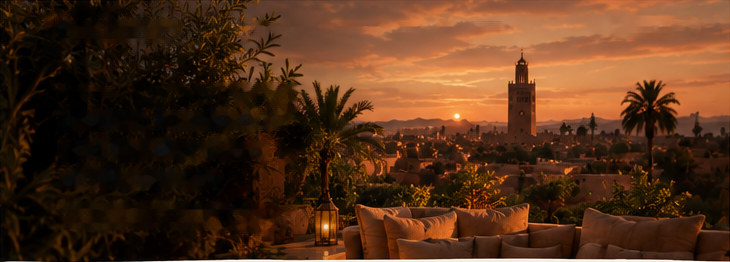
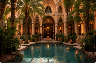
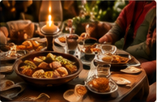
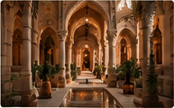
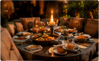
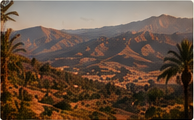

OUR JOURNAL
Travel tips, cultural insights, and curated experiences
to help you discover the real Marrakech.

TRAVEL TIPS
From location to atmosphere, here's what to
look for when selecting your ideal riad.
APR 12, 2025
EXPERIENCES
From Agafay to the Atlas, discover our favorite
desert experiences for every type of traveler.
MAR 28, 2025

CULTURE
A cultural ritual, a symbol of hospitality,
and a taste of tradition.
MAR 15, 2025

LUXURY
Discover the hidden gems of the medina,
where history meets modern luxury.
FEB 28, 2025

GASTRONOMY
From traditional Moroccan cuisine to modern
fusion, these are our favorite spots.
FEB 10, 2025

CULTURE
An unforgettable journey through Berber villages,
waterfalls, and breathtaking landscapes.
JEN 22, 2025